R mini course
Nicole Kinlock
Overview
- Part 1: Basics of R
- Part 2: Probability & distributions
- Part 3: Data manipulation
- Part 4: Looping and vectorization
- Part 5: Functions
- Part 6: Data visualization using ggplot2
About this course
This course was originally developed by Ben Weinstein (2014), Mike McCann (2015), and Nicole Kinlock (2016, 2017) as a workshop in the Department of Ecology & Evolution at Stony Brook University
Part 1: Basics of R
What is R?
- Statistical programming language and environment
- Freely available as public domain software (i.e. not copyrighted)
- Available on all operating systems: Windows, macOS, Linux
- Better than most commercial alternatives
- Not just for statistics, but also general purpose programming
Why use R?
- Flexible
- Transparent
- Large user base
- Valued skill
RStudio
- Integrated development environment (IDE) for the R language
- Specifically designed to improve coding experience in R
- Free version available
- When you open RStudio, it should find your locally installed version of R
RStudio layout
- The screen is split four ways:
- Workspace: (Top left) Write scripts are written & saved
- Console: (Bottom left) Where commands are run
- Environment, History: (Top right) Where objects are stored
- Files, Plots, Packages, & Help: (Bottom right) View filesystem, figures, packages, help
Writing a script
- A script is a plain text file with R commands in it – this will be where you save the code that you are writing
- The file will end in the extension
.R - Open a new script by clicking the
New fileicon in the top left corner of RStudio and selectingR script
Run R code
- Type directly into the console (best when you don’t want to save the code) or type into a script (can be saved and rerun as needed)
- In the console: run code by hitting the
ENTERkey (⏎) - In a script: run code by placing your cursor on a line (or highlight
a larger block of code) and hitting the
CTRL + ENTER(STRG + ⏎) keys on Windows/Linux orCMD + ENTER(CMD + ⏎) on Mac - Note that you could also use the
Runbutton in RStudio – however, I recommend relying on the GUI as little as possible when you’re learning to code
R as a calculator
- R has many arithmetic operators
+Addition-Subtraction*Multiplication/Division^Exponentiation%%Modulus (finds remainder)%/%Integer division (leaves off remainder)
- R obeys the standard order of operations
R as a calculator
## [1] 276.25## [1] 9## [1] 3R is logical
- R also has many logical operators
<Less than<=Less than or equal to>Greater than>=Greater than or equal to
==Exactly equal to!=Not equal to!NOT|OR&AND
R is logical
## [1] FALSE## [1] TRUE## [1] FALSEYour turn
What is 45 multiplied by 982?
What is 13 to the fifth power?
Is 8 to the third power equal to the sum of 52 and 76 multiplied by 4?
Creating objects
- An object is the fundamental unit in R – all expressions can be saved as an object
- Objects show up in your environment (upper right panel)
- To create an object we use the assignment operator
(
<-), which assigns expressions on the right to objects on the left
## [1] 39601Assignment operator
- Do not use
=for assignment in R. It’s best practice to use<-instead. - This is arbitrary, but a convention in R
- FYI: the reasoning is that
<-maintains backwards compatibility with S-Plus
- FYI: the reasoning is that
- But, it can be a good idea to follow conventions – this makes your code more readable to others
R Tip: Comment on your code
- Use hashtags (
#) to comment on your script – anything to the right of a#is ignored - It’s surprisingly hard to remember what you did when reviewing older code, and it’s particularly important when other people are reading your code
## [1] 10Expressions using objects
Objects can be combined into other, larger objects
## [1] 800## [1] 800Your turn
- Create an object that is equal to your age. Create another object that is equal to the age of the person next to you. Find the difference between these objects.
Data structure 1: Vectors
- R has 5 common data structures – we will start with the simplest: vectors, which are one dimensional structures
- Vectors come in four types: numeric, integer, logical
(
TRUEorFALSE), and character - A vector is made using the combine function,
c().
Vectors with integers and numbers
## [1] 3.24 4.57 5.03## [1] 8 4 2 1 1Vectors with characters
Characters in R need to be enclosed in quotation marks
## [1] "dog" "cat" "bird" "fish"Vectors - Combining multiple objects
## [1] 5.291503 2.000000 5.000000 9.500000Vectors - Regular sequences
You can use a colon (:) to create a vector that includes all integers in between the numbers on either side of the colon
## [1] 1 2 3 4 5 6 7 8 9 10Vectors - Regular sequences
You can use the seq() function to create a sequential
vector with a particular minimum (from), maximum
(to), and increment (by)
## [1] 0 2 4 6 8 10 12 14 16 18 20Your turn
Create a vector that includes all integers between 5 and 25. Name this vector
x.Create a vector that includes all even integers between 2 and 22. Name this vector
y.Create a single vector that combines object x and object y. Name this vector
z.
Vectors - Index by position
You can access any element in a vector by putting its
position in square brackets []
## [1] 76 72 74 74 78## [1] 78Vectors - Index by position
You can also use positional vector indexing to return the same
vector, but with certain elements missing, using the minus
(-) sign
## [1] 72 74 74 78## [1] 76 74 78Vectors - Index by name
You can assign names to each element of the vector, and then extract an element by indexing based on the name
## monday tuesday wednesday thursday friday
## 28.1 28.5 29.0 30.1 30.2## wednesday
## 29Vectors - Logical indexing
You can extract elements in a vector that meet specific criteria based on a logical expression
## [1] 5 6 7 8 9 10## [1] 6 7 8 9Your turn
What are the 5th and 12th positions of the vector
seq(from = 5, to = 15, by = 0.5)?Create the vector
15:45and name itm. Extract all elements ofmthat are greater than or equal to 21.
What is a function?
- A function is an object that performs a task given some inputs called arguments
- R has many functions already available, but you can also write your own
- Functions are called in the format:
FunctionName(arguments) - The output of a function can be saved as an object:
output <- FunctionName(arguments)
Function arguments
- It’s not necessary to name arguments, but it can be helpful for you and others reading your code
- If you don’t name arguments, then the order in which you enter them matters
## [1] 1 2 3 4 5 6 7 8 9 10## [1] 1 2 3 4 5 6 7 8 9 10Common functions
- Use
sum()to take the sum of all elements in a vector:
## [1] 12- Use
mean()to take the mean of all elements in a vector:
## [1] 52.5Functions can act on an object
## [1] 52.5R Tip: The help system
Help files provide information on what a function does and list examples at the bottom
Your turn
What is the median of 26, 24, 8, 17, and 42?
Hint: functions are often named intuitivelyWhat does the function
range()do? Take the range of a vectorc(10, 8, 3, 5)Is
mean(4, 5)different thanmean(c(4, 5))?
Packages
- Functions can be kept inside packages
- Some packages come pre-installed with R, and others must be downloaded
Packages
- There are many, many R packages - currently 22,477 (when I first taught this course in 2016, there were “only” 7,742)
- You can view all packages here: List of R Packages
- There are lots of packages commonly used by ecologists and
evolutionary biologists (e.g.,
ape,sf,lme4,dplyr)
Installing packages
- To install a package use the
install.packages()function - Be sure to surround the package name in quotation marks
(
"")
Loading packages
- You have to load packages using the
library()orrequire()functions in order to use them every time you restart R - This lets R know which packages to load and not waste memory by loading all possible functions
R Tip: Loading packages
Good scripts have a series of
require()orlibrary()statements at the top of the script.FYI: Some say that you should preferentially use
library(), becauserequire()“tries” to load a package andlibrary()actually loads a package- If you use
require()at the top of the screen and you don’t have the package installed, you’ll get an error message later on when you use functions in the package (whereas withlibrary()you’ll get an error right away)
- If you use
The R user community
Note that large language model chatbots like ChatGPT were trained using the above sources
Useful link
Practice
Worksheets created by Mike McCann and hosted on his Rpubs site
Part 2: Probability & distributions
Review
What is the sum of 1 through 10, multiplied by two?
What are the 12th and 45th positions of the vector
seq(1, 43, 0.25)?Find all of the elements of the vector
seq(1, 10, 0.1)that are less than 2. What is the median value of these elements?
Statistical distributions
To sample 1000 times from a normal probability distribution with mean
0 and standard deviation 1, we can use the rnorm()
function
## [1] 0.9398250 -0.2443054 -0.3926406 2.1991521 -0.2256305 0.1465497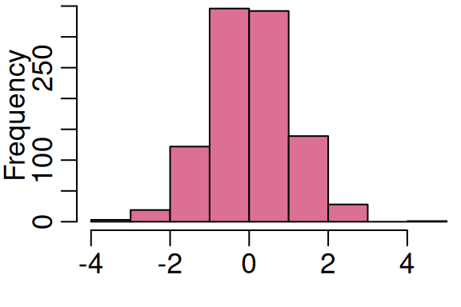
Your turn
Sample 100 random numbers from a normal distribution with a mean of 3 and a standard deviation of 2, and assign it to an object
a.Find the mean of your sample. How close was it to the true mean (the mean that you set in
rnorm())?What is the 13th element in your vector
a?
Generating random samples from other distributions
- R has many available distributions, including all of those commonly used in biological analyses
- Depending on the distribution, each function has its own set of parameter arguments
- For example, the
rpois()function is the random sampler for the Poisson distribution and it has only one parameter,lambda(\(\lambda\)).
Your turn
Draw 100 random samples from a Poisson distribution with
lambda = 3, and assign it to an objectx.Draw 1000 random samples from a Poisson distribution with
lambda = 3, and assign it to an objecty.Calculate the means of both vectors. What is the difference between the means?
Fundamental quantities of distributions
- For each distribution, there are 4 useful functions:
rnorm()random samplednorm()probability density functionpnorm()cumulative distribution functionqnorm()quantile function
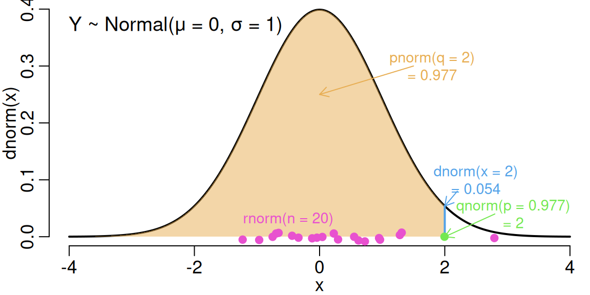
Figure adapted from this website
Plot distributions with histograms
Histograms (hist()) place data into “bins”, and count
the number (frequency) of data falling into each bin
sample <- rnorm(1000)
hist(sample, col = "palevioletred", main = "", xlab = "Value",
ylab = "Frequency")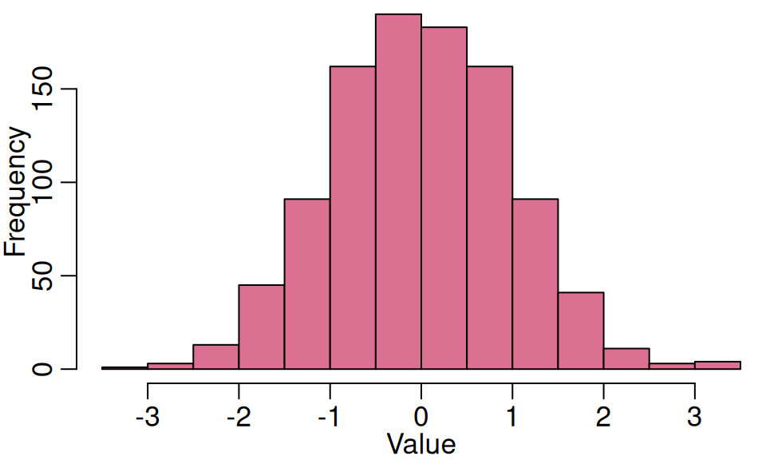
Your turn
Sample 10 random variates (values) from a normal distribution and make a histogram of the sample. Repeat for 100, then 1000 random variates. What do you notice about the histograms?
Take a random sample from a gamma distribution using the
rgamma()function withshape = 1and make a histogram of the sample.
Sampling
Take a random sample of elements in a vector using the
sample() function
## [1] 36 35 21 32 10 8 15 4 18 22 1 7 5 46 3 40 19 27 12 41## [1] 46 5 47 7 33 35 24 12 15 2 2 20 36 40 17 21 17 26 4 2Your turn
Sample 15 elements from a vector of integers between 125 and 325 without replacement.
Sample 10 letters (using the pre-installed vector
letters) with replacement.Sample 0 or 1 twelve times, with and without replacement. What happens?
Scatterplots
Scatterplots show the relationship between two variables
(plot(x, y))
# random samples from normal distributions
sample1 <- rnorm(n = 40, mean = 4, sd = 2)
sample2 <- rnorm(n = 40, mean = 2, sd = 1)
plot(x = sample1, y = sample2, xlab = "Sample 1", ylab = "Sample 2")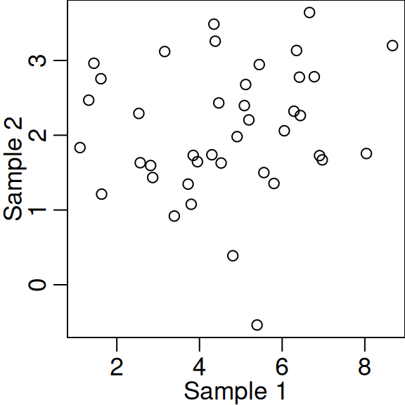
Add lines to scatterplots
- Add straight lines to a plot using the
abline()function - Argument
aspecifies the intercept andbthe slope
plot(sample1, sample2, xlab = "Sample 1", ylab = "Sample 2")
abline(a = 0.5, b = 0.75, lwd = 2, col = "royalblue")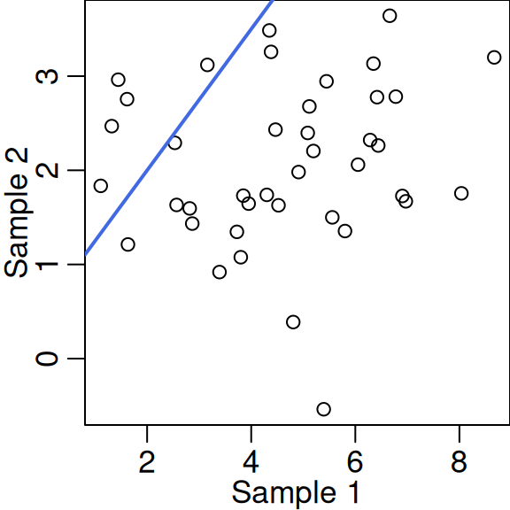
Add model fit lines to scatterplots
Lines can also be model fits – lm() fits a linear model
of y (sample2) as a function of
x (sample1)
Lots of useful links for plotting
R Base Graphics: An Idiot’s Guide
Producing Simple Graphs with R
We will talk more about plotting in Part 6
Practice
Part 3: Data manipulation
Data structure 2: Data frames
- Most data we work with in ecology & evolution is two-dimensional, with rows and columns
- Data frames are thus a very important data structure
## Girth Height Volume
## 1 8.3 70 10.3
## 2 8.6 65 10.3
## 3 8.8 63 10.2
## 4 10.5 72 16.4
## 5 10.7 81 18.8
## 6 10.8 83 19.7Iris data frame
- Data frames are usually read in from a file, but R also comes with practice data frames
- We will use the
irisdataset, famously used by R.A. Fisher in 1936
## Sepal.Length Sepal.Width Petal.Length Petal.Width Species
## 1 5.1 3.5 1.4 0.2 setosa
## 2 4.9 3.0 1.4 0.2 setosa
## 3 4.7 3.2 1.3 0.2 setosa
## 4 4.6 3.1 1.5 0.2 setosa
## 5 5.0 3.6 1.4 0.2 setosa
## 6 5.4 3.9 1.7 0.4 setosaData frames - Useful functions
head()- first six rowstail()- last six rowsdim()- dimensions (# rows, # columns)nrow()- number of rowsncol()- number of columnsstr()- structure of object (very useful!)class()- class of objectrownames()- row namescolnames()- column names
Your turn
How many rows does the
irisdata frame have?How many columns? What are the column names?
How many species are included in the dataset (use the
str()function)?What are the classes of each of the columns?
Data structure 3: Factors
- In the
irisdata frame, species are encoded as a factor - Factors, like vectors, are one dimensional and they describe categorical data, ordered by levels
## Factor w/ 3 levels "setosa","versicolor",..: 1 1 1 1 1 1 1 1 1 1 ...## [1] "setosa" "versicolor" "virginica"Convert vector to factor
- Make a vector into a factor using the
factor()function - Provide levels using the
levelsargument as a vector in your desired order
## chr [1:4] "D" "C" "D" "C"## Factor w/ 2 levels "D","C": 1 2 1 2Data frames - Subsetting
- R has many powerful subset operators that will allow you to easily perform complex operations on any kind of dataset (much easier than with Excel!)
- Think of data frames as a series of vectors grouped together into a table
## Sepal.Length Sepal.Width Petal.Length Petal.Width Species
## 1 5.1 3.5 1.4 0.2 setosa
## 2 4.9 3.0 1.4 0.2 setosa
## 3 4.7 3.2 1.3 0.2 setosa
## 4 4.6 3.1 1.5 0.2 setosa
## 5 5.0 3.6 1.4 0.2 setosa
## 6 5.4 3.9 1.7 0.4 setosaData frames - Index by position
Index individual elements of a data frame using square brackets
df[row#, column#]
## [1] 5.1## [1] 0.2Data frames - Index by position
Index entire rows or columns by leaving one of the positions blank:
df[, column#] or df[row#, ]
## Sepal.Length Sepal.Width Petal.Length Petal.Width Species
## 2 4.9 3 1.4 0.2 setosa## [1] 3.5 3.0 3.2 3.1 3.6 3.9 3.4 3.4 2.9 3.1 3.7 3.4 3.0 3.0 4.0 4.4 3.9 3.5
## [19] 3.8 3.8 3.4 3.7 3.6 3.3 3.4 3.0 3.4 3.5 3.4 3.2 3.1 3.4 4.1 4.2 3.1 3.2
## [37] 3.5 3.6 3.0 3.4 3.5 2.3 3.2 3.5 3.8 3.0 3.8 3.2 3.7 3.3 3.2 3.2 3.1 2.3
## [55] 2.8 2.8 3.3 2.4 2.9 2.7 2.0 3.0 2.2 2.9 2.9 3.1 3.0 2.7 2.2 2.5 3.2 2.8
## [73] 2.5 2.8 2.9 3.0 2.8 3.0 2.9 2.6 2.4 2.4 2.7 2.7 3.0 3.4 3.1 2.3 3.0 2.5
## [91] 2.6 3.0 2.6 2.3 2.7 3.0 2.9 2.9 2.5 2.8 3.3 2.7 3.0 2.9 3.0 3.0 2.5 2.9
## [109] 2.5 3.6 3.2 2.7 3.0 2.5 2.8 3.2 3.0 3.8 2.6 2.2 3.2 2.8 2.8 2.7 3.3 3.2
## [127] 2.8 3.0 2.8 3.0 2.8 3.8 2.8 2.8 2.6 3.0 3.4 3.1 3.0 3.1 3.1 3.1 2.7 3.2
## [145] 3.3 3.0 2.5 3.0 3.4 3.0Data frames - Index by position
- Data frames can be indexed for both rows and columns
- To get the 5th, 7th, and 9th rows for the first two columns in the
irisdata frame:
## Sepal.Length Sepal.Width
## 5 5.0 3.6
## 7 4.6 3.4
## 9 4.4 2.9Data frames - Index by name
- Columns can be indexed by name using square brackets
- Or you can index a column by name using the dollar sign
(
$) operator
Your turn
Using the iris dataframe…
Subset the 9th element of the
Sepal.WidthcolumnSubset the 1st, 4th, and 7th rows
Use the
seq()function to subset all odd rowsWhat happens when you use negative numbers to index the
irisdataframe? Hint: Use the functiondim()on the original and final objects
Data frames - Logical indexing
To subset the iris data frame to petal widths greater
than 1 cm:
## Sepal.Length Sepal.Width Petal.Length Petal.Width Species
## 51 7.0 3.2 4.7 1.4 versicolor
## 52 6.4 3.2 4.5 1.5 versicolor
## 53 6.9 3.1 4.9 1.5 versicolor
## 54 5.5 2.3 4.0 1.3 versicolor
## 55 6.5 2.8 4.6 1.5 versicolor
## 56 5.7 2.8 4.5 1.3 versicolorData frames - Logical indexing
We can compare the distributions of petal widths for the complete dataset and the subset:

Your turn
Why is
iris[iris > 3, ]a nonsensical command?Why is
iris[iris$Sepal.Length > 3]a nonsensical command?Create a histogram of petal lengths for the entire data.
Subset the data for petal lengths greater than two centimeters. Create a histogram of your new data.
Data frames - Logical indexing
For all types of data, if we want to subset a specific value we use
the logical operator “==”
# subset of observations where petal length is equal to 4 cm
iris.p4.sub <- iris[iris$Petal.Length == 4.0,]
head(iris.p4.sub)## Sepal.Length Sepal.Width Petal.Length Petal.Width Species
## 54 5.5 2.3 4 1.3 versicolor
## 63 6.0 2.2 4 1.0 versicolor
## 72 6.1 2.8 4 1.3 versicolor
## 90 5.5 2.5 4 1.3 versicolor
## 93 5.8 2.6 4 1.2 versicolorData frames - Logical indexing
Quotation marks ("") needed when subsetting by
characters or factors
# subset only records from the species Iris versicolor
iris.vers.sub <- iris[iris$Species == "versicolor", ]
head(iris.vers.sub)## Sepal.Length Sepal.Width Petal.Length Petal.Width Species
## 51 7.0 3.2 4.7 1.4 versicolor
## 52 6.4 3.2 4.5 1.5 versicolor
## 53 6.9 3.1 4.9 1.5 versicolor
## 54 5.5 2.3 4.0 1.3 versicolor
## 55 6.5 2.8 4.6 1.5 versicolor
## 56 5.7 2.8 4.5 1.3 versicolorData frames - Logical indexing
- It’s also possible to combine logical statements:
- Use
&(AND) if both statements should be true - Use
|(OR) if either statement should be true
- Use
# subset species = versicolor AND petal length greater than 4 cm
iris.sub <- iris[iris$Petal.Length > 4 & iris$Species == "versicolor", ]
head(iris.sub)## Sepal.Length Sepal.Width Petal.Length Petal.Width Species
## 51 7.0 3.2 4.7 1.4 versicolor
## 52 6.4 3.2 4.5 1.5 versicolor
## 53 6.9 3.1 4.9 1.5 versicolor
## 55 6.5 2.8 4.6 1.5 versicolor
## 56 5.7 2.8 4.5 1.3 versicolor
## 57 6.3 3.3 4.7 1.6 versicolorYour turn
Explain each of the following indexing statements:
iris[1:4, ]iris[c(1:15), c(1, 3)]iris[iris$Species == "setosa", "Petal.Width"]What happens when you add a
!before a logical statement? Hint: Compareiris[iris$Species == "setosa", ]andiris[!(iris$Species == "setosa"), ].
Data frames - Building from scratch
Use the data.frame() function
## x y
## 1 1 6
## 2 2 5
## 3 3 4
## 4 4 3
## 5 5 2Data frames - Add columns
You can also add columns using the data.frame()
function
## x y z
## 1 1 6 a
## 2 2 5 b
## 3 3 4 c
## 4 4 3 d
## 5 5 2 eData frames - Add columns
Or, you can use the assignment operator <- with the
$ notation
## x y z
## 1 1 6 a
## 2 2 5 b
## 3 3 4 c
## 4 4 3 d
## 5 5 2 eData frames - Remove columns
Use the minus (-) sign and the position you want to
remove
## x y
## 1 1 6
## 2 2 5
## 3 3 4
## 4 4 3
## 5 5 2Data frames - Remove columns
Or, assign NULL to the column
## x y
## 1 1 6
## 2 2 5
## 3 3 4
## 4 4 3
## 5 5 2Data structure 4: Matrices
- Similar to data frames, matrices are two-dimensional
- Unlike a data frame, however, a matrix can include only numbers (not characters or factors)
## [,1] [,2] [,3]
## [1,] 1 4 7
## [2,] 2 5 8
## [3,] 3 6 9Matrices
Why do you need them? Some functions (e.g., matrix algebra functions) require a matrix as an input
## Error in diag(num.df): 'list' object cannot be coerced to type 'double'## [1] 1 5 9Matrix indexing
Indexing is the same as with data frames
## [1] 2 5 8## [1] 5 6Importing your own data
- R is not a spreadsheet program, so it’s not great for direct data entry
- It’s best to start with spreadsheets for data entry and storage, and to import spreadsheets into R for data analysis and visualization
- CSV (comma separated values) files are often the preferred format for importing into R
- Before we import the example CSV file, we will need to consider working directories
Working directory
- Find out what your current working directory is using the
getwd()function - This is the folder on your computer where R will look to open or write files
- Though you could also use the
Filestab (bottom right panel) in RStudio, again, I recommend relying on the GUI as little as possible
## [1] "/media/nlkhd/Nicole/Postdoc/Rminicourse"Working directory
Set your working directory using the setwd()
function
Importing data
- Load the
seedlings.csvfile (available on Ilias) using theread.csv()function - If you include the full path to your file, you do not need to set your working directory
Importing data - file encoding
- File encoding can be a real pain with R – special characters can render incorrectly (e.g., as Ã, �, or question marks)
- Try to save spreadsheets with UTF-8 encoding and always include the
fileEncoding = "UTF-8"argument when reading or writing files
R Tip: Variable names
- One of the largest sources of frustration with R can be importing data
- Variable names, e.g., column names, often cause problems
- Do not include spaces or special characters in variable names
- Abbreviate variable names when appropriate
Your turn
Load the data frame
seedlings.csvusing theread.csv()function, and store it as an object calledseedlings.df.What is the mean height for all seedlings? What about the mean height for all seedlings except Rhus typhina?
What is the difference in the mean aboveground biomass for Rosa multiflora seedlings and Rubus occidentalis seedlings?
Exporting data frames
- After you’ve made changes or conducted an analyses, you may want to export your data frame
- Use the
write.csv()function to export data frames - Remember the
fileEncoding = "UTF-8"argument
Helpful link
Practice
Part 4: Looping and vectorization
For-loops
- Loops are an important tool across programming languages
- For-loops run for a certain number of steps (iterations), and at each step, the statements in the loop are executed
- The basic syntax is:
for (i in 1:number_iterations) {
execute these statements
}
Why use a for-loop?
- For-loops are useful when we have a repeated process with identical steps, but different values
- Using loops can help you avoid writing repetitive code
Our first for-loop (pseudocode)
for (i in 1:5) {
i starts at 1. R executes some statements;
i is increased to 2 and statements are
executed again;
i is increased to 3 and statements are
executed again;
and so on, until i = 5, at which point the loop executes
the set of statements for the last time
}
Our first for-loop
## [1] 1
## [1] 2
## [1] 3
## [1] 4
## [1] 5For-loops - braces vs. brackets
- We’ll now go through the differences among:
- square brackets
[] - curly braces
{}: encases multiple statements within a control-flow construct (for,while,if, etc.) - parentheses
(): arithmetic use as well as
- square brackets
For-loops - Square brackets
- Square brackets
[]are used to index objects, i.e., to access elements of a vector, matrix, or data frame - Pay attention to the number of dimensions the object has – the
number of commas inside
[]indicates the number of dimensions
## [1] 0.2 0.6 0.9For-loops - Square brackets
test.mat <- matrix(data = seq(0.1, 10, 0.1), nrow = 10, ncol = 10) # matrix
test.mat[6, 6] # 2 dimensions, 1 comma## [1] 5.6## [1] 0.6 1.6 2.6 3.6 4.6 5.6 6.6 7.6 8.6 9.6For-loops - Parentheses
- Parentheses
()(“round brackets” in British English) are used to call functions - Arguments are placed inside the parentheses
- Note they are also used for arithmetic
## [1] 55## [1] 9For-loops - Curly braces
Curly braces {} are used to enclose all of the
statements to be executed in a for-loop (or another control flow
statement, e.g., if, while, etc.)
## [1] 1
## [1] 2
## [1] 3Using a for-loop
You can perform operations on the loop variable, in
this case, called i
## [1] 1
## [1] 4
## [1] 9
## [1] 16Using a for-loop
- Assignments can occur in a loop
- The loop variable,
i, is not directly called in this loop - The operation
x <- x^2is done four times xchanges each time because it is re-assigned in the loop
## [1] 4
## [1] 16
## [1] 256
## [1] 65536Your turn
Create a for-loop that …
…prints integers 1 to 100.
…prints integers 100 to 1.
…adds 1 to integers 1 through 5.
…divides all even integers from 0 to 20 by 10. Hint: Use the
seq()function.
Vectors and for-loops
- In most of the above examples, we used the loop variable,
i, directly in mathematical operations - It is more common to use the loop variable to loop over elements of a vector (or matrix, or data frame)
name.vec <- c("Larry", "Curly", "Moe")
for (i in 1:length(name.vec)) {
print(paste("Hi,", name.vec[i], sep = " "))
}## [1] "Hi, Larry"
## [1] "Hi, Curly"
## [1] "Hi, Moe"Vectors and for-loops
What did that really do? Consider the loop in pieces, here just for
i = 1
## [1] "Larry"## [1] "Hi, Larry"For-loop output
- R suppresses printing inside for-loops (and other control flow structures)
- You can use the
print()function to view the output of each iteration in your console
name.vec <- c("Larry", "Curly", "Moe")
for (i in 1:length(name.vec)) {
print(paste("Hi,", name.vec[i], sep = " "))
}## [1] "Hi, Larry"
## [1] "Hi, Curly"
## [1] "Hi, Moe"For-loop output
Without print() or an assignment <-, no
output is returned
Your turn
Create a vector of the days of the week and generate a message that says “Today is x” using a loop
Explain why the following code is wrong:
Data structure 5: Lists
- Lists, like vectors, are one-dimensional
- In the example with vector
xbelow,1and2are converted to characters because"blue"is included – elements in a vector must all be the same type
## [1] "1" "2" "blue"## [1] "character"Lists can include multiple types
- In contrast, the elements of a list can be any type
- Lists may seem multidimensional, but they behave as one-dimensional data structures
plant.lst <- list(Mass = seq(0, 0.25, 0.01), Count = 10:20,
Adult = c(TRUE, FALSE, FALSE),
Flower = c("open", "closed", "closed", "open"))
str(plant.lst)## List of 4
## $ Mass : num [1:26] 0 0.01 0.02 0.03 0.04 0.05 0.06 0.07 0.08 0.09 ...
## $ Count : int [1:11] 10 11 12 13 14 15 16 17 18 19 ...
## $ Adult : logi [1:3] TRUE FALSE FALSE
## $ Flower: chr [1:4] "open" "closed" "closed" "open"Constructing lists
You can construct a list using the list() function
## num [1:9] 1 2 3 4 5 3 6 8 10## List of 2
## $ : num [1:5] 1 2 3 4 5
## $ : num [1:4] 3 6 8 10List indexing
- Single square brackets
[]return a list - Double square brackets
[[]]return list contents - Main difference is the class of the output
test.lst <- list(1:4, c(3.25, 6.75, 8.175, 4.5),
c("apples", "bananas", "oranges", "pears"))
str(test.lst[2]) # returns a list## List of 1
## $ : num [1:4] 3.25 6.75 8.18 4.5## num [1:4] 3.25 6.75 8.18 4.5List indexing
The class of the output matters
## Error in test.lst[1] * test.lst[2]: non-numeric argument to binary operator## [1] 3.250 13.500 24.525 18.000List indexing
In order to reference a single list element
directly, we have to use both the double square bracket
[[]] operator and the single bracket []
operator
## [1] 3.250 6.750 8.175 4.500## [1] 6.75How do we save for-loop outputs?
- Instead of printing to the screen, we usually want to create a new object to store the for-loop output
- To do this, you need to create an empty vector or list before the loop
output.vec <- c() # create an empty vector
x <- rnorm(n = 10, mean = 1, sd = 0.5)
for (i in 1:length(x)) {
output.vec[i] <- x[i] * 10
}
output.vec## [1] 3.846135 21.286788 12.492741 12.164208 3.167838 11.592237 9.911036
## [8] 7.669332 9.318119 9.225117How do we save for-loop outputs?
- If you know ahead of time, you can make an empty vector with the size and the type of the output you want to store
- This makes computation faster!
output.vec <- vector(mode = "numeric", length = 10)
x <- rnorm(n = 10, mean = 1, sd = 0.5)
for (i in 1:length(x)) {
output.vec[i] <- x[i] * 10
}
output.vec## [1] 10.3855444 11.4251220 13.1126015 5.8310914 20.6893518 18.2335082
## [7] 11.4384632 11.0064255 13.8240813 -0.9570684Your turn
First, create a vector, y, with 10 random samples from a
standard normal distribution (mean = 0, sd = 1).
Compute
y[i] * 2for 10 iterations (the length of vector y) using a for-loop with indexi. Place the output in a vector.Compute
y[i] * 2for 10 iterations using a for-loop. Place the output in a list.Find the the 4th element in the output vector from question 1 and the output list from question 2.
Control flow statements - if
## [1] "This makes sense"Control flow statements - if
To have for-loops do different things under different conditions, use
an if statement
x <- 1:6
for (i in 1:length(x)) {
if (x[i] > 3) {
print(paste(x[i],"is greater than 3"))
}
if (x[i] <= 3) {
print(paste(x[i],"is less than or equal to 3"))
}
}## [1] "1 is less than or equal to 3"
## [1] "2 is less than or equal to 3"
## [1] "3 is less than or equal to 3"
## [1] "4 is greater than 3"
## [1] "5 is greater than 3"
## [1] "6 is greater than 3"Control flow statements - if else
ifandelse: run one set of statements in one condition (if) and another set for every other possible condition (else)
x <- rpois(n = 10, lambda = 1)
output.vec <- vector(mode = "numeric", length = 10)
for (i in 1:length(x)) {
if (x[i] == 0) {
output.vec[i] <- -100
} else {
output.vec[i] <- x[i]^2
}
}
output.vec## [1] 4 4 -100 -100 4 1 4 1 1 4Control flow statements - break
We can end the for-loop if certain logical conditions are met using
an if and a break statement
x <- 1:8
for (i in 1:length(x)) {
if (x[i] <= 3) {
print(paste(x[i],"is less than or equal to 3"))
} else if (x[i] > 3){
break
}
}## [1] "1 is less than or equal to 3"
## [1] "2 is less than or equal to 3"
## [1] "3 is less than or equal to 3"Control flow statements - next
We can skip an element that we know will cause an
error using an if and a next statement
x <- -3:3
for (i in 1:length(x)) {
if (x[i] <= 0) {
next
} else if (x[i] > 0) {
print(log(x[i]))
}
}## [1] 0
## [1] 0.6931472
## [1] 1.098612Your turn
First, create a vector, x, with all integers from 1 to
100.
Create a for-loop that computes
x[i] * 2for 100 iterations (the length of vectorx). Place the output in a vector. However, calculatex[i] * 3whenx[i] == 32.Create a for-loop that computes
x[i] * 2for 100 iterations. Place the output in a list. However, break the loop after 51 iterations.Create a for-loop that computes
x[i] * 2for 100 iterations. Place the output in a vector. However, skipx == 71.
Alternatives to for-loops: apply family
- The
applyfamily of functions allows you to repeatedly do a function to every row, column, or element in a data frame (or vector, or list) apply(X, MARGIN, FUN)function takes three argumentsX: your matrix or data frameMARGIN = 1: apply to rowsMARGIN = 2: columnsMARGIN = c(1, 2): rows and columnsFUN: function to apply
Using apply
Use apply() to take the median of the columns of matrix
M
## [,1] [,2] [,3]
## [1,] 0.79912987 -0.4824335 -0.6337058
## [2,] 0.16477972 0.3580694 1.2481599
## [3,] -0.04590009 -0.3036447 -0.7591209## [1] 0.1647797 -0.3036447 -0.6337058apply vs. for-loop
The same analysis, but using a for-loop
## [1] 0.1647797 -0.3036447 -0.6337058apply family of functions
- There are other versions of
apply()for other data types:lapply(): apply function to list or vector, return listsapply(): apply function to list or vector, return list or vector if possiblevapply(): similar tosapply(), but you have to specify output typetapply(): apply function split by factormapply(): apply function to multiple lists or vectors
Using lapply
Use lapply() to apply a function to elements of a
list
## Error in sum(test.lst): invalid 'type' (list) of argument## [[1]]
## [1] 6
##
## [[2]]
## [1] 12.3
##
## [[3]]
## [1] 3.174828Useful links
Practice
Part 5: Functions
Functions in R
- Functions contain sets of instructions that we want to carry out repeatedly
- We have already seen many of the basic functions that come pre-installed with R
Functions in packages
We have also seen functions that are loaded from packages
Writing your own function
- It is a good idea to write your own functions instead of repeating the same lines of code over and over
- R functions are objects just like vectors, lists, etc.
FunctionName <- function(<arguments>) { <body> }
Writing your own function
# define function
SumTwoValues <- function(x, y) {
return(x + y)
}
# call function
SumTwoValues(x = 1, y = 3) ## [1] 4Function environments
- Objects defined inside functions exist in a different
environment than the global environment
- Objects inside the function don’t exist outside of the function!
- However, if a variable is not defined inside a function, the function will look one level above
Function environments
If you run the function below, you’ll see that y does
not pop up in your Environment panel (top right)
x <- 2 # x variable defined outside the function
HiddenY <- function() {
y <- 1 # y variable defined inside the function
return(c(x, y))
}
# function looks for x one level above (in global environment)
HiddenY()## [1] 2 1Function output
Unless you explicitly return the output, you won’t be able to access it
NoReturn <- function(a, b) {
# x, y, z exist only in function environment
x <- a + b
y <- (a + b)^2
z <- a / b
}
NoReturn(1, 2) # doesn't return anything
YesReturn <- function(a, b) {
x <- a + b
y <- (a + b)^2
z <- a / b
return(c(x, y, z))
}
YesReturn(1, 2) # returns x, y, and z## [1] 3.0 9.0 0.5Function output
You can omit the return() function if you want
## [1] 3.0 9.0 0.5Your turn
Create a function that…
…takes in two arguments,
xandy, and computesx * y * 2.…takes in three arguments, and makes a vector from the result.
…counts the number of matching elements in two separate vectors. Hint: use
%in%to create a logical statement.
Function arguments
Arguments can be passed to a function as a vector or a list
params <- c(5, 25)
MultAlphaBeta <- function(p) {
alpha <- p[1]
beta <- p[2]
return(alpha * beta)
}
MultAlphaBeta(params)## [1] 125Function default values
You can set pre-defined “default” values for function arguments
## [1] 3## [1] -3Your turn
Write a function that…
…takes a vector as an argument and multiplies the sum of the vector by 10. Return a logical statement based on whether the sum is under 1000.
…calculates the mean of every column in a data frame. Code the function so that it does not evaluate the column mean if the column elements are not numbers, using the logical statement
class(x) != "numeric". Try your function on theirisdataset.
Your turn
ColumnMeans <- function(x) {
output <- c()
for (i in 1:ncol(x)) {
if(class(x[, i]) != "numeric") {
output[i] <- NA
}
if(class(x[, i]) == "numeric") {
output[i] <- mean(x[, i])
}
}
names(output) <- colnames(x)
return(output)
}
ColumnMeans(iris)## Sepal.Length Sepal.Width Petal.Length Petal.Width Species
## 5.843333 3.057333 3.758000 1.199333 NAUseful links
Practice
Part 6: Data visualization using
ggplot2
Review
ggplot2 is not a base package, so we need to install
it.
- How would you install the package
ggplot2? - What is the next step you need to do before you can use a function
from
ggplot2?
Install and load ggplot2
Why ggplot2?
- Works very well with data frames, especially when some of your data are factors
- Easier to create visually appealing figures
- Useful for exploring trends in your data
Why gg?
ggstands for “grammar of graphics”- There is a set of terms that defines the basic components of (every) plot
- Using this set of terms, you can produce figures using coherent,
consistent syntax (very similar code for very different figures)
- However, this syntax does vary quite a bit from typical R syntax!
- If you are a little confused by the syntax at first, that probably just means that you are getting more comfortable with the R language
The grammar
- A basic
ggplotconsists of:data: Must be a data frameaes(thetics): How your data are represented visually (x, y, color, size, shape, etc.)geom(etry): What type of geometric objects you want to display (points, lines, polygons, etc.)
A basic plot
Plots can be assembled in pieces
Aesthetics - point size
Increase the point size using the size argument in
geom_point()
Aesthetics - color
Differentiate state region by color using the
color argument in aes()
Aesthetics - shape
Differentiate state region by shape using the
shape argument in aes()
ggplot(data = state.df, aes(x = Life.Exp, y = HS.Grad, color = state.region, shape = state.region)) +
geom_point(size = 2)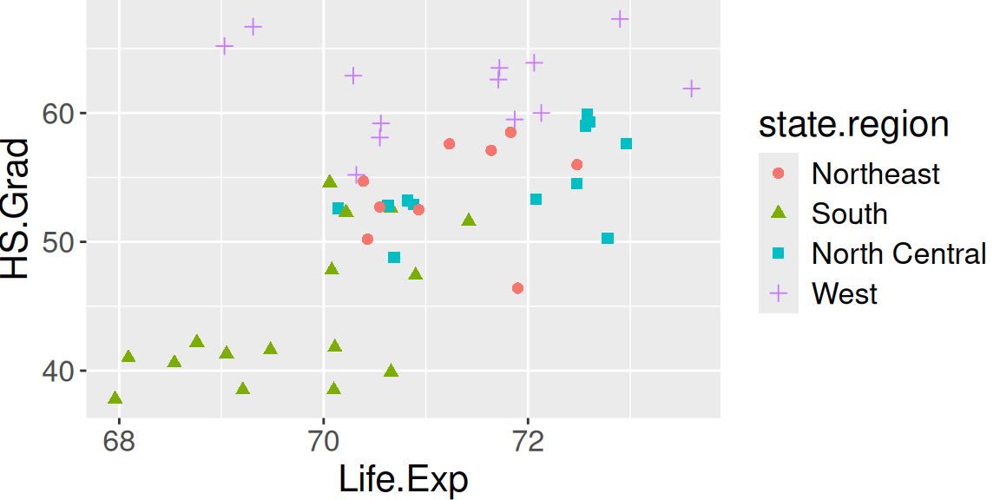
Your turn
First, take a sample of 1000 rows from the diamonds
dataset (pre-installed with R). Then, try to generate this plot using
ggplot().
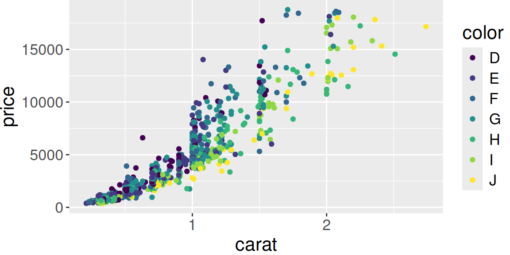
Geoms
- Geoms are geometries that represent data points
- We’ve already seen
geom_point()
- We’ve already seen
- You can see all options by typing
geom_and hitting the tab key (↹)- Use
?geom_to view the help page
- Use
Geoms - Boxplot
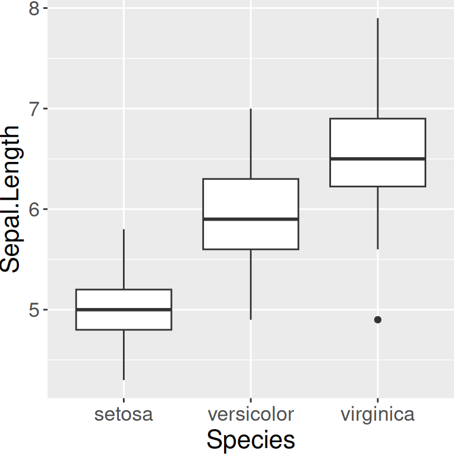
Geoms - Histograms
You can change the aesthetics, like binwidth or
fill
Geoms - Bar plots
Geoms - Line plots
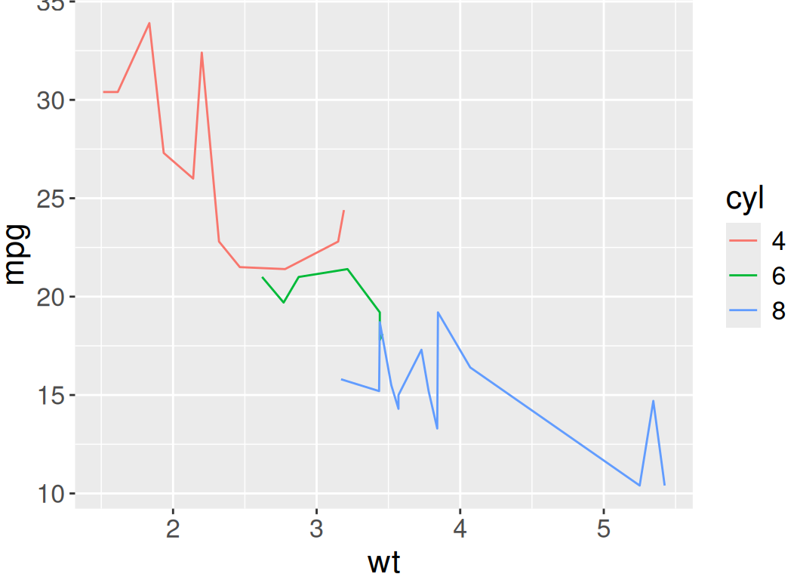
Geoms - Density plots
Your turn
- Make a histogram of
Sepal.Lengthfrom theirisdata set. What didggplot2do with the different species?
Facets
- Facets divide plots into subplots based on a factor
- Syntax is
facet_grid(. ~ Species), where columns are species and there is only one row
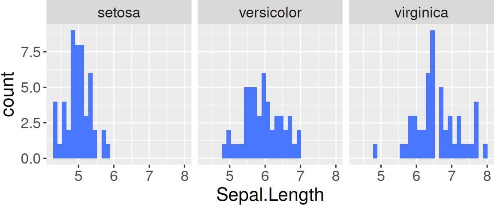
Facets
Stats
- Stats show summaries of your data by building a new variable to plot
- Type
stat_and hit the tab key (↹) to see all options- Use
?stat_to see the help screen
- Use
Stats - smooth
Use stat_smooth to add a linear fit to a scatterplot
ggplot(iris, aes(x = Sepal.Length, y = Sepal.Width, color = Species)) +
geom_point() + stat_smooth(method = "lm")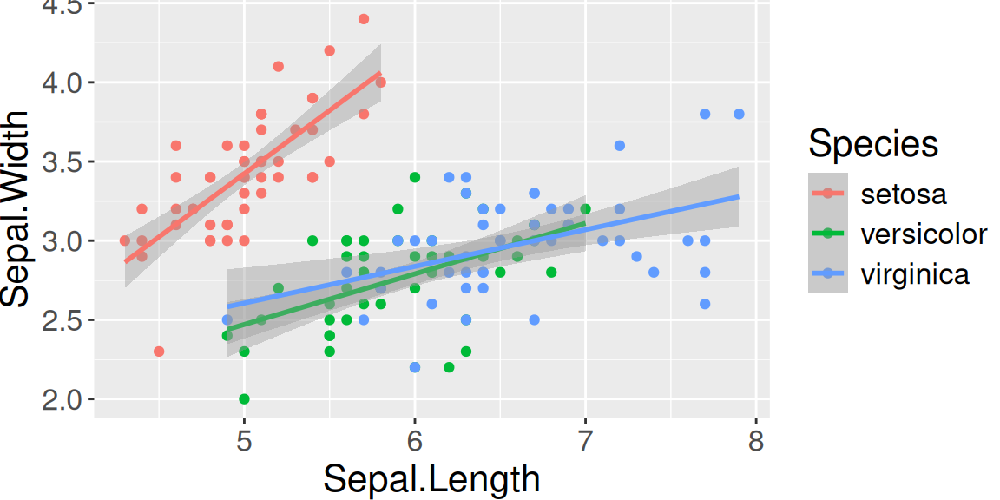
Scales
- Scales map data values to aesthetics
- You can define colors, labels, limits, etc. for your scale
- Scales can modify axis (
scale_y_,scale_x_), color (scale_color_), fill (scale_fill_), shape (scale_shape_), and size (scale_size_) aestheticsscale_*_continuous(): continuous datascale_*_discrete(): discrete datascale_*_manual(): discrete data, you specifyscale_*_log10(): log transform an x- and/or y-axis
Scales - log scale
Include log x and log y axes using scale_x_log10() and
scale_y_log10()
Scales - manual
Choose colors manually using scale_color_manual()
Axis labels
Edit labels, including x- and y-axis labels, using
labs()
Labels inside figure
Add labels inside the figure using geom_text()
ggplot(data = state.df, aes(x = Life.Exp, y = HS.Grad, color = state.region, shape = state.region)) +
geom_text(aes(label = state.abb), size = 4) +
labs(x = "Life expectancy (years)", y = "High school graduation (%)")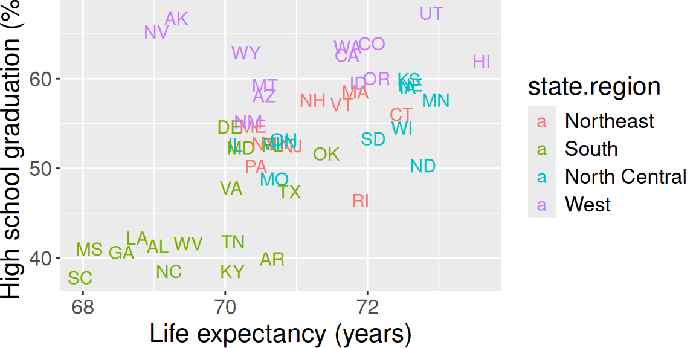
Themes
- Use themes to control the aesthetics of the figure
- You can make broad changes by including
theme_bw()ortheme_classic()(white backgrounds with/without gridlines, respectively) - You can customize the theme by adding arguments to the
theme()function (see?themefor all customization options)
Themes
ggplot(iris, aes(x = Sepal.Length, y = Sepal.Width, color = Species)) +
geom_point() + theme_classic() +
theme(text = element_text(family = "Serif", size = 14))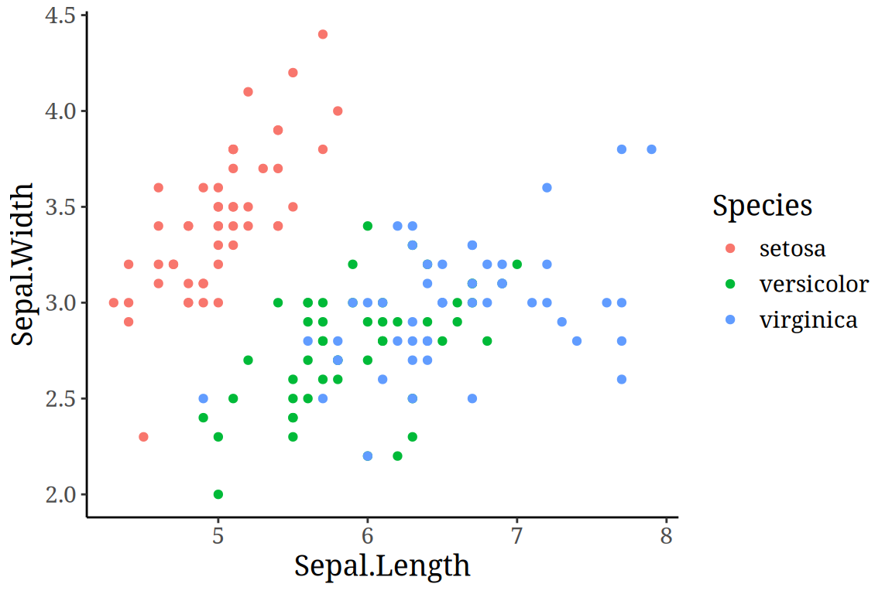
Themes
Saving plots
- Plots created with
ggplot2can be saved using theggsave()function - File type is determined by the file extension
- Specify the dimensions (
height,width) and resolution (dpi, dots per inch)
Wide format data
Sometimes data is in a wide format, with multiple observations in each row
## SpeciesA SpeciesB SpeciesC SpeciesD
## 1 49.61576 78.20320 20.30636 25.60048
## 2 51.05926 80.13258 20.46518 26.32380
## 3 48.11434 73.57788 20.38281 25.50558## [1] 100 4Proper data format - long
Data is much easier to analyze if it is in a long format, with only one row per observation (experimental unit)
## Species Mass
## 1 A 84.85158
## 2 B 73.53687
## 3 C 78.70841## [1] 400 2Melting: from wide to long
# make some fake wide-format data
test.df.wide <- data.frame(A = rnorm(100, 50, 6),
B = rnorm(100, 75, 5),
C = rnorm(100, 50, 4),
D = rnorm(100, 55, 3))
head(test.df.wide)## A B C D
## 1 47.36195 75.56843 48.55342 54.28444
## 2 57.62678 75.57699 51.28958 57.48009
## 3 41.08512 64.74984 49.06261 59.44645
## 4 37.74837 73.14452 52.44894 58.87176
## 5 59.08682 76.66800 45.42846 57.48863
## 6 38.38787 74.60036 48.85778 60.05602Melting: from wide to long
Use the melt() function from the reshape2
package
library(reshape2)
test.df.long <- melt(data = test.df.wide,
variable.name = "Species",
value.name = "Mass")
head(test.df.long)## Species Mass
## 1 A 47.36195
## 2 A 57.62678
## 3 A 41.08512
## 4 A 37.74837
## 5 A 59.08682
## 6 A 38.38787Melting: from wide to long
Melting the data makes it easier to plot with
ggplot2
Useful links
Practice
Additional topics and links
- Using RMarkdown to document code in a more reproducible way:
- Combining, or merging, multiple datasets (“data wrangling”):
Github
Last, you may want to create a GitHub account (where I’ve uploaded this course). GitHub is used for making code freely available as well as for version control (important for collaborating on projects):